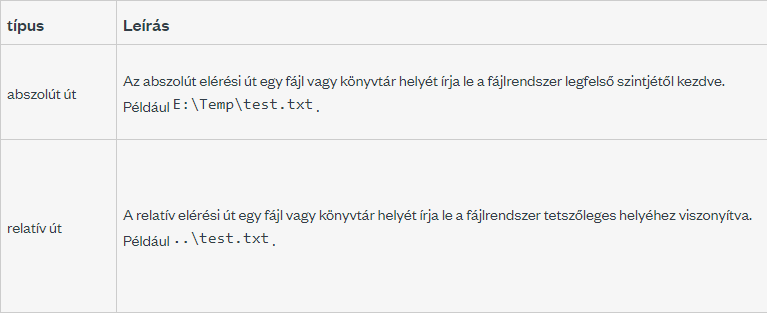

Bármilyen állományt (file) szeretnénk használni
az valamilyen szolgáltatón (server) helyezkedik
el. Legyen ez akár a saját gépünk.
Ezen a szolgáltatón az állományok(nak) és
mappák(nak), könyvtárak(nak) egy jól
meghatározott struktúrában (fájlrendszer,
könyvtárstruktúra) vannak (kellene lenniük)
elhelyezve. MINDIG TÖREKEDJÜNK ERRE!
A fájlok a számítógép merevlemezén tárolt
információk. Ahhoz, hogy a fájlokat a
létrehozásuk után vissza lehessen kérni, a
felhasználóknak pontosan meg kell adniuk, hogy a
merevlemez melyik részén tárolták az
információkat. Ez a fájl elérési útvonalakon
keresztül történik, ami nem más, mint a fájlok
gépen történő rendszerezése, amely az ember
számára is érthető.
A fő probléma, amelyet a fájl elérési utak
jelentenek a reprodukálhatóság szempontjából, az
az, hogy minden gépre egyediek. Tehát amikor egy
programozó kódot ír egy fájl betöltéséhez, akkor
a fájl lekéréséhez használt útvonal eltér attól,
amelyet egy másik programozónak használnia kell,
hogy betöltse ugyanazt a kódot egy másik
számítógépre. Ez gyakran azzal jár, hogy a kódot
nem lehet átvinni más gépekre.
Az elérési útvonal bizonyos karakterrel
elválasztott komponensekből áll, melyek közül az
utolsó maga a fájl vagy mappa neve, a többi
pedig meghatározza, hogy milyen könyvtárakon át
navigálva található meg.
Az elválasztó karakter operációs rendszertől
függően általában a perjel ("/"), a fordított
perjel ("\"), a kettőspont (":"), vagy ritkábban
más karakter.
Az elérési utakat az informatikában széles
körben használják a modern operációs
rendszerekben elterjedt könyvtár/fájl
kapcsolatok képviseletére, valamint az URL-ek
szerves tagjai.
Megkülönböztetünk abszolút és relatív
útvonalakat.
Mi az abszolút és mi a relatív állományelérési útvonal?

Az abszolút elérési útvonal (teljes URL) a
fájlrendszeren belül mindig ugyanazt a helyet
jelöli, az aktuális munkakönyvtártól
függetlenül. Ezért a gyökérkönyvtárból indul, és
a fájlig vezető összes könyvtár nevét
tartalmazza.
Ezzel szemben a relatív elérési útvonal az
aktuális könyvtárból (egy adott állománytól)
indul, ezért különböző helyzetekben más
állományokat jelölhet. Ennek következtében
önmagában a fájlnév a fájlt tartalmazó
könyvtárból induló relatív útvonalnak
tekinthető.
A relatív fájl elérési utak az útvonal elején
pont jelölést használnak, ezt követi az elérési
út elválasztó és a fájl helye. Egy pont (.)
jelzi az aktuális könyvtárat, egy dupla pont
(..) pedig a szülőkönyvtárat. Például ./arra
utasítja a programot, hogy az aktuális
könyvtárban keresse a fájlt, és ../azt mondja a
programnak, hogy menjen fel a szülőkönyvtárba,
mielőtt a fájlt keresné.